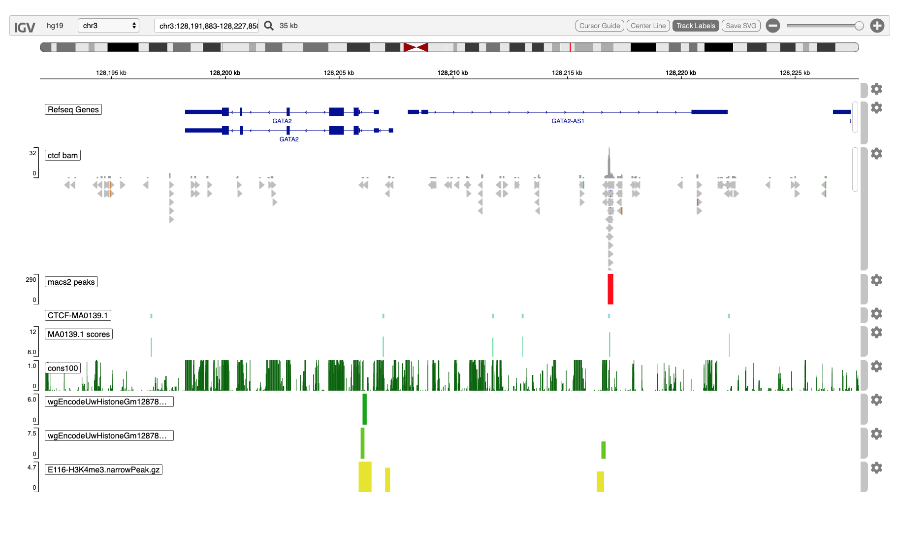
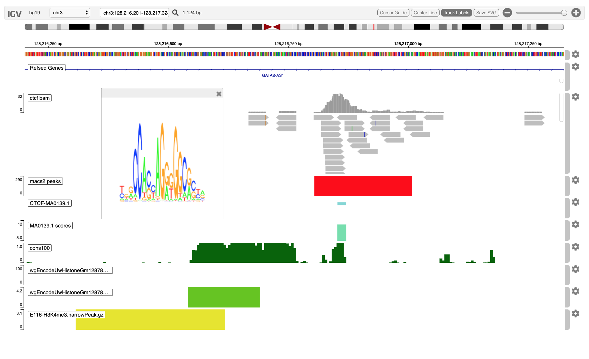

ctcfChipSeq.RmdThe igvR package provides easy programmatic access in R to the web-based javascript library igv.js. R’s access to data, and operations upon data, are complemented by igv’s richly interactive web browser interface to display and explore genomic and epigentic data.
In this vignette we present a somewhat contrived ChIP-seq study - contrived in that it is not organized around an actual research problem. Instead, this vignette demonstrates methods you would likely use to do visual QC and exploratory data analysis a ChIP-seq experiment.
We begin with ENCODE data of CTCF binding on chromosome 3, on the hg19 reference genome, in the vicinity of the GATA2 gene. We will
The two images below illustrate the final state of igv in your browser at the conclusion of the code found below. The first view spans 35kb:
 The second spans less than 1200 bases.

library(igvR)
library(MotifDb)
library(AnnotationHub)
library(BSgenome.Hsapiens.UCSC.hg19)
library(phastCons100way.UCSC.hg19)Create the igvR instance, with all default parameters (portRange, quiet, title). Javascript and HTML is loaded into your browser, igv.js is initialized, a websocket connection between your R process and that web page is constructed, over which subsequent commands and data will travel.
Display 1.4MB on chr3 more or less centered on the GATA2 genes
showGenomicRegion(igv, "chr3:128,079,020-128,331,275")loc <- getGenomicRegion(igv)
which <- with(loc, GRanges(seqnames=chrom, ranges = IRanges(start, end)))
param <- ScanBamParam(which=which, what = scanBamWhat())
bamFile <- "~/github/ChIPseqMotifMatch/bulk/GSM749704/GSM749704_hg19_wgEncodeUwTfbsGm12878CtcfStdAlnRep1.bam"
file.exists(bamFile)
x <- readGAlignments(bamFile, use.names=TRUE, param=param)
track <- GenomicAlignmentTrack("ctcf bam", x, visibilityWindow=10000000, trackHeight=200) # 30000 default
displayTrack(igv, track)We previously ran MACS2 using docker and make, with this makefile, an approach that you may find useful but which requires that you install Docker and the Macs2 image. The resulting narrow peaks file is includes in the package.
Macs2 narrowpeaks produce one possible summary and reduction of the bam pileup, though the bam track histogram is arguably more informative.
DATADIR=/Users/paul/github/igvR/vignettes/macs2
BAM=GSM749704_hg19_wgEncodeUwTfbsGm12878CtcfStdAlnRep1.bam
NAME=GSM749704_hg19_chr19
run:
docker run -v $(DATADIR):/data/ fooliu/macs2 callpeak -t /data/$(BAM) -n $(NAME) --outdir data/This produces several files; we are interested only in the narrow peaks:
filename <- system.file(package="igvR", "extdata", "GSM749704_hg19_chr19_peaks.narrowPeak")
tbl.pk <- get(load(system.file(package="igvR", "extdata", "GSM749704_hg19_chr19_subset.RData")))
track <- DataFrameQuantitativeTrack("macs2 peaks", tbl.pk, color="red", autoscale=TRUE)
displayTrack(igv, track)We use a lenient match threshold reflecting our view that TF binding is often quite permissive and inexact.
hits.forward <- matchPWM(pfm, as.character(dna), with.score=TRUE, min.score="80%")
hits.reverse <- matchPWM(reverseComplement(pfm), as.character(dna), with.score=TRUE, min.score="80%")
tbl.forward <- as.data.frame(ranges(hits.forward))
tbl.reverse <- as.data.frame(ranges(hits.reverse))
tbl.forward$score <- mcols(hits.forward)$score
tbl.reverse$score <- mcols(hits.reverse)$score
tbl.matches <- rbind(tbl.forward, tbl.reverse)
tbl.matches$chrom <- loc$chrom
tbl.matches$start <- tbl.matches$start + loc$start
tbl.matches$end <- tbl.matches$end + loc$startIt can be useful to view the logo of the matched motif in context. igvR supports this with (at present) a little preparation:
With this option enabled, and with the name (or label) field of an annotation bed data.frame carrying the prefix MotifDb://, then clicking on the motif element in CTCF_MA0139.1 track, the corresponding motif will be displayed in a popup window. This is especially useful when your display has tracks for multiple motifs.
enableMotifLogoPopups(igv)
tbl.matches$name <- paste0("MotifDb::", motif.name)
tbl.matches <- tbl.matches[, c("chrom", "start", "end", "name", "score")]
dim(tbl.matches)In igvR we distinguish between annotation tracks, quantitative tracks, and other tracks (sucs as VCF and bam). Annotation tracks are a representation of the BED format. Quantitative tracks represent the WIG format.
In brief: imagine you have a data.frame with these five columns:
Construct a DataFrameAnnotationTrack with columns 1-4.
Construct a DataFrameQuantitativeTrack with columns 1,2,3,5.
If the name (fourth) column contains the name of a MotifDb entry (e.g., “Hsapiens-jaspar2018-CTCF-MA0139.1”) then prepend “MotifDb://” to support the motif logo popup.
track <- DataFrameAnnotationTrack("CTCF-MA0139.1", tbl.matches[, 1:4], color="random",
trackHeight=25)
displayTrack(igv, track)
track <- DataFrameQuantitativeTrack("MA0139.1 scores", tbl.matches[, c(1,2,3,5)],
color="random", autoscale=FALSE, min=8, max=12)
displayTrack(igv, track)Motifs match to DNA sequence with great frequency, especially when (as above), a relaxed motif matching threshold is used. There are, however, three factors which increase the likelihood that the matches identify functional binding sites:
The first factor can be see from direct inspection in the browser. For the second, let’s add the phastCons100way genome track, a Bioconductor annotation package which represents conserved sequence across 100 species over millions of years.
To obtain a fine-grained assessment of conservation, we use bins which are shorter than motifs. So here we add a conservation track which displays the conservation of every 5-base pair block. Conservation is scored between 0 and 1.
loc <- getGenomicRegion(igv)
starts <- with(loc, seq(start, end, by=5))
ends <- starts + 5
count <- length(starts)
tbl.blocks <- data.frame(chrom=rep(loc$chrom, count), start=starts, end=ends, stringsAsFactors=FALSE)
dim(tbl.blocks)
tbl.cons100 <- as.data.frame(gscores(phastCons100way.UCSC.hg19, GRanges(tbl.blocks)), stringsAsFactors=FALSE)
tbl.cons100$chrom <- as.character(tbl.cons100$seqnames)
tbl.cons100 <- tbl.cons100[, c("chrom", "start", "end", "default")]
track <- DataFrameQuantitativeTrack("cons100", tbl.cons100, autoscale=TRUE, color="darkgreen")
displayTrack(igv, track)H3K4me3 histone methylation marks are often associated with transcription initiation in promoter regions. We will add three tracks from the AnnotationHub for H3K4me3 methylation in Gm12878 (lymphoblastoid) cells.
ah <- AnnotationHub()
ah.human <- subset(ah, species == "Homo sapiens")
histone.tracks <- AnnotationHub::query(ah.human, c("H3K4me3", "Gm12878", "Peak", "narrow")) # 3 tracks
descriptions <- histone.tracks$description
titles <- histone.tracks$title
colors <- rep(terrain.colors(6), 4)
color.index <- 0
roi <- with(getGenomicRegion(igv), GRanges(seqnames=chrom, IRanges(start=start, end=end)))
for(i in seq_len(length(histone.tracks))){
name <- names(histone.tracks)[i]
color.index <- color.index + 1
gr <- histone.tracks[[name]]
ov <- findOverlaps(gr, roi)
histones <- gr[queryHits(ov)]
track.histones <- GRangesQuantitativeTrack(titles[i], histones[, "pValue"],
color=colors[color.index], trackHeight=50,
autoscale=TRUE)
displayTrack(igv, track.histones)
Sys.sleep(5)
} # for trackshowGenomicRegion(igv, "chr3:128,216,201-128,217,324")The large ChIP-seq peak located in the middle of the large intron of GATA2-AS1 is centered on a good match to the CTCF Jaspar 2018 motif, and most of that sequence match intersects with highly conserved DNA. The co-occurrence of these three features suggests that this location is likely to be a functional binding site for CTCF.